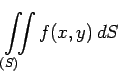
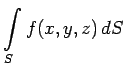

| bestimmtes Integral der Funktion f zwischen den Grenzen a und b | |
| Kurvenintegral 1. Art bzgl. der Raumkurve K mit der Bogenlänge s | |
| Integral über eine geschlossene Kurve (Umlaufintegral) | |
|  | Doppelintegral über einem ebenen Flächenstück S |
|  | Oberflächenintegral 1. Art über einer räumlichen Fläche S |
 |
Oberflächenintegral 2. Art über einer geschlossenen Oberfläche |
| Dreifachintegral oder Volumenintegral über dem Volumen V |